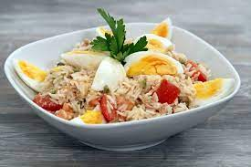

<h1>Riz au thon</h1>

<h3> Description </h3>
<p> Un delicieux riz au thon avec <em> ses petits oeufs durs</em></p>
<ul>
<li> Riz </li>
<li> Thon </li>
<li> Oeufs durs </li>
</ul> 
<ol>
    <li> Faire cuire le riz pendant 10 minutes </li>
    <li> Rajouter le thon en boite </li>
    <li> Faire cuire les oeufs 10 minutes dans l'eau bouillante </li>
    <li> Rajouter les oeufs sur le riz</li>
    <li> Deguster :) </li>
</ol>